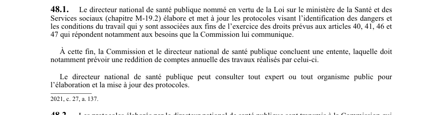

art-48.1-LSST : protocoles d'identification des dangers
Un article du wiki ⚖️ Recueil législatif
En bref
Le directeur national de santé publique élabore. Il s'agit d'une obligation.
- 46 et 47 ; la Commission.
- Reddition de comptes annuelle prévue par entente entre la Commission.
🌐 LegisQuébec · 📄 PDF officiel (page 15)
Texte officiel : capture du PDF
{kind=link}

Toucher l'image pour l'agrandir🔗 Ouvrir a cette page : LSST.pdf : page 15 · texte a jour au 26 mars 2024
Voir aussi
- art. 47 : cessation travail travailleuse allaitante · faculté : si l'affectation demandée n'est pas effectuée immédiatement, la travailleuse peut cesser de travailler jusqu'à ce que l'affectation soit faite ou jusqu'à la fin de la période de l'allaitement.
- art. 48 : articles 36-45 applicables allaitement · obligation : les articles 36 à 37.3, 43, 44 et 45 s'appliquent, compte tenu des adaptations nécessaires, lorsqu'une travailleuse exerce le droit que lui accordent les articles 46 et 47.
- art. 48.2 : publication protocoles par Commission · les protocoles élaborés par le directeur national de santé publique sont transmis à la Commission qui les publie sur son site Internet.
- art. 49 : obligations générales du travailleur · obligation : le travailleur doit notamment prendre connaissance du programme de prévention, protéger sa propre santé et sécurité et celle des autres, se soumettre aux examens de santé exigés, participer à l'identification et à l'élimination des risques.
- ↑ Loi : LSST
Pages qui pointent ici (6)
- art-134-LMRSST : insertion après art. 40 LSST Recueil législatif
- art-40.1-LSST : délivrance du certificat de grossesse Recueil législatif
- art-47-LSST : cessation travail travailleuse allaitante Recueil législatif
- art-48-LSST : dispositions applicables à l'allaitement Recueil législatif
- art-48.2-LSST : publication protocoles par Commission Recueil législatif
- art-49-LSST : obligations générales du travailleur Recueil législatif